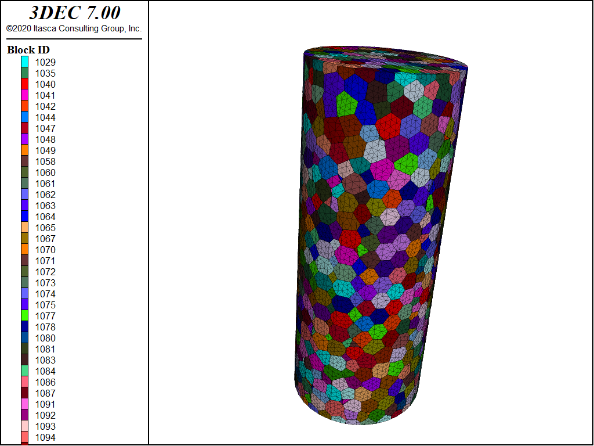
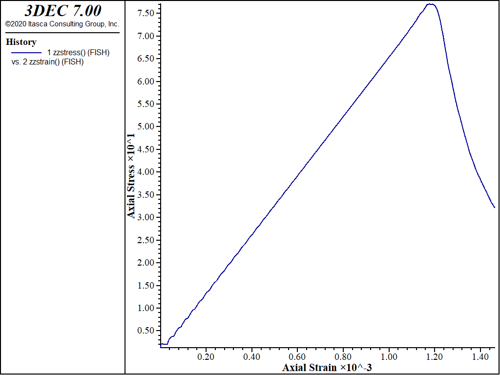
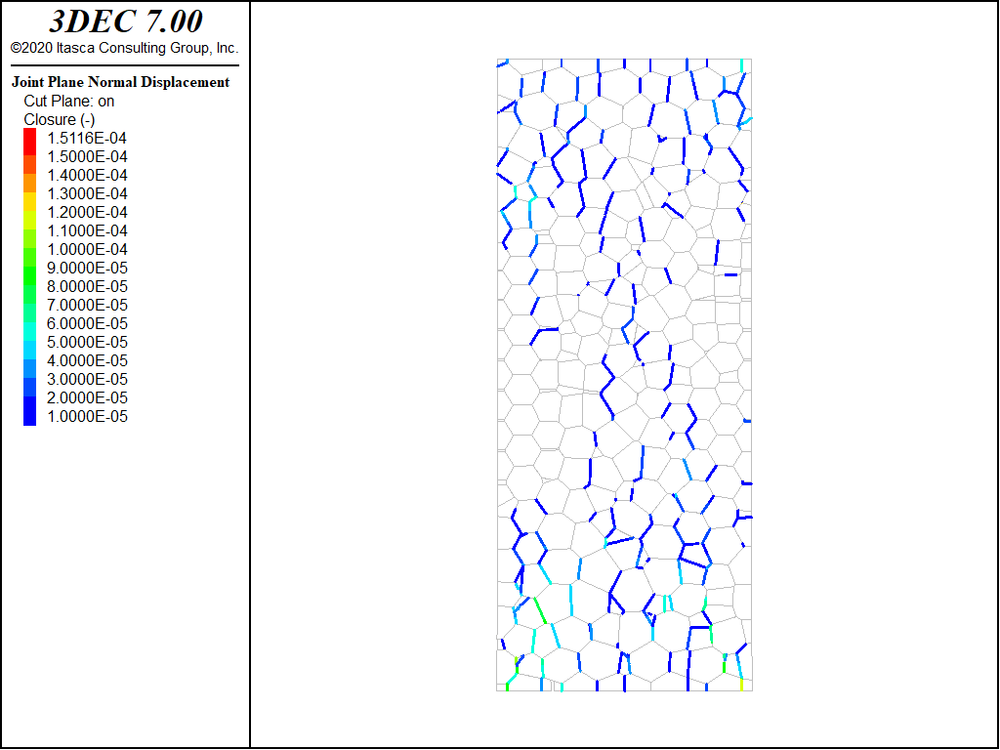

采用 Voronoi 块体的单轴抗压强度试验
问题描述
注意
要在 3DEC 中查看此项目，请使用菜单命令 。选择“3DEC/ ExampleApplications/ UCS_Voronoi”，然后选择“voronoi.prj”进行加载。所用的主数据文件（main data files）显示在本示例的末尾。所有数据文件都可在该项目中找到。
本示例介绍如何对由黏结 Voronoi 块体构成的圆柱形试样进行无侧限压缩试验。
3DEC 模型
模型首先导入一个简单平行六面体的 DXF，其尺寸为 6x6x12.5 cm。然后使用 生成 Voronoi 区块命令（block generate voronoi） 命令并配合 from-geometry 关键字生成 Voronoi 块体集合。指定最大棱边长度为 6 mm，结果生成 3361 个 Voronoi 块体。
然后通过导入圆柱体的 dxf 并使用命令 block cut from-geometry 将模型切割成圆柱体。这一步是必要的，因为平行六面体棱边处的 Voronoi 块体呈现不真实的排列，会因“结晶状”堆积而导致强度偏高。切去棱边即可破坏这种排列。
然后对块体划分网格，所得的 3DEC 模型如图 1（Figure 1）所示。


图 1：构成模型的块体。
假定网格单元为弹性，杨氏模量为 76 GPa，泊松比为 0.25。这些属性是选取来模拟 Lan 等（2013）描述的数值试验。块体之间的接触同样按 Lan 等（2013）赋予属性，如下列属性所示：
通过对块体顶部和底部的网格点施加 0.05 m/s 的恒定速度对块体加载。轴向应力由所有顶部和底部网格点的竖向（z）反力之和除以横截面积的两倍计算得到。轴向应变则简单地为顶部与底部网格点位移之和除以原始长度。
随后对模型进行 35,000 步的循环计算。由于模型永远不会达到平衡，因此不使用 求解模型（model solve） 命令。
结果与讨论
3DEC 模拟得到的轴向应力-轴向应变曲线如图 2（Figure 2）所示。观察到峰值应力约为 75 MPa，与 Lan 等（2013）所得数值非常接近。
所形成的“裂缝”的横截面如图 3（Figure 3）所示。该图通过绘制节理、按法向位移作等值线，然后勾选选项以指定 1e-5 m 的张开度阈值，从而仅绘制张开的节理而生成。


图 2：单轴抗压强度试验中轴向应力与轴向应变的关系。


图 3：单轴抗压强度试验结束时的裂缝。若节理上的法向位移（张开量）超过 0.01 mm，则绘制该法向位移。
参考文献
Lan, H., Martin, C.D., Qi, S. and Li, T., 2013. A 3D grain based model for characterizing the geometric heterogeneity of brittle rock, in Proceedings of the 47th U.S. Rock Mechanics / Geomechanics Symposium, San Francisco, CA, USA, 23-26 June, American Rock Mechanics Association.
数据文件
sample.dat
model new
model random 10000
block tol 1e-6
; 创建平行六面体，用于填充 Voronoi 块体
geometry import 'parallelepiped.dxf'
block generate voronoi max-edge 0.006
; 切出圆柱体，以避免 Voronoi 块体沿边缘对齐
model domain extent -1 1
geometry import 'cylinder.dxf'
block cut geometry 'cylinder'
block delete range cylinder end-1 0 0 0 end-2 0 0 0.125 radius 0.025 not
model save 'voro_rigid.sav'
;model restore 'voro_rigid.sav'
block zone generate-new max-edge 0.002
; 删除未能划分网格的块体
block delete range deformable not
model save 'voro_defor.sav'
ucs_test.dat
model restore 'voro_defor'
model large-strain on
; 参数采用 MPa 单位
block zone cmodel assign elastic
block zone prop young 76e3 pois 0.25 density 0.002
block contact jmodel mohr
block contact prop stiffness-normal 7.6e7 stiffness-shear 7.6e7 cohesion 40 tension 14.4 friction 10
block contact material-table default prop stiffness-normal 7.6e7 stiffness-shear 7.6e7 friction 10
block gridpoint group 'top' range pos-z 0.125
block gridpoint group 'bottom' range pos-z 0.
block gridpoint apply vel-z -0.05 range group 'top'
block gridpoint apply vel-z 0.05 range group 'bottom'
model cyc 1
; 创建网格点列表，用于监测反力
[global area = math.pi*0.025^2]
[global length = 0.125]
fish define findList
gp_list_top = list
gp_list_bottom = list
loop foreach gp block.gp.list
if block.gp.isgroup(gp,'top')
gp_list_top("end") = gp
endif
if block.gp.isgroup(gp,'bottom')
gp_list_bottom("end") = gp
endif
endloop
end
[findList]
[global gp_top = gp_list_top(1)]
fish define zzstress
; 压应力为正，单位为 MPa
local top_reaction = -list.sum(block.gp.force.reaction.z(::gp_list_top))
local bottom_reaction = list.sum(block.gp.force.reaction.z(::gp_list_bottom))
zzstress = 0.5*(top_reaction + bottom_reaction)/area
zzstrain = -2.0*block.gp.disp.z(gp_top)/length
end
fish history zzstress
fish history zzstrain
model cycle 35000
model save 'ucs.sav'
⇐ UCS Test with Fragmentation | Lined Circular Tunnel in an Elastic Medium with Anisotropic Stresses ⇒
| 这些内容对您有帮助吗？… | FLAC3D © 2019, Itasca | 原文更新于 2020 年 10 月 8 日 |